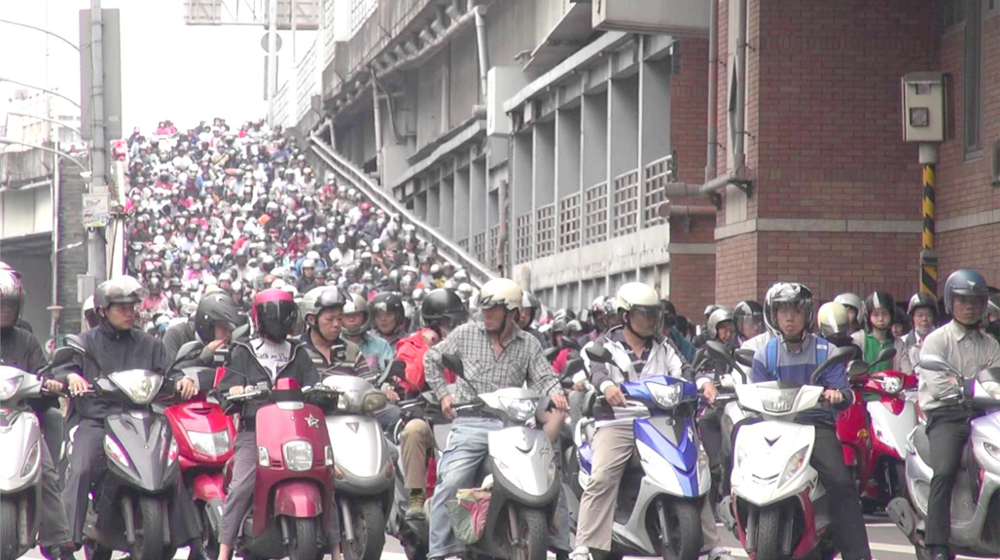

事件名稱：交通工具汙染
事件地點：台北市中正區
事發狀況
翻開台北市的空污地圖，或許更能按圖索驥。距離台大醫院不到五公里的古亭測站，過去十年的空氣污染指標（PSI）居台北市七大測站之冠，比周邊的中山、士林、松山和萬華站都高。
古亭站所涵蓋範圍，包括中正區和大安區，不僅有總統府、行政院等重要部會機關，更涵蓋台大、建中等知名學府，幾乎是全國菁英薈萃之地。
世界衛生組織（WHO）在十月中，將空氣污染列為主要環境致癌物，引發肺癌風險更勝二手菸。最危險的，是可堆積在人肺深處的細懸浮微粒ＰＭ2.5。
調查結果
汽車廢氣中的氮氧化物，與雲層中的水分結合，會產生非常弱的消酸。這種酸會隨著雨水落到地面，就是酸雨。酸雨對植物和動物有害。二氧化碳是一種溫室氣體，它會將熱氣滯留在大氣層裡。如果滯留的熱氣太多，全球的溫度就會不斷上升。
汽車、卡車及公車所使用的汽油與柴油，是一種複雜的碳氫化合物。當它們與引擎中的空氣混合，燃燒之後，會產生有害的氣體，及未完全燃燒的碳氫細微粒。車輛廢棄中所含的鉛也會散佈在空氣中。
絕大多數的交通工具，都會污染空氣。車輛通常都已汽油和柴油為燃料。當這些燃料燃燒時，會將有害的氣體和蒸氣釋放到空氣中。柴油引擎比較能將燃料完全燃燒，也比汽油引擎省油。但是，這兩種燃料都會排放出又濃又黑的廢煙，嚴重污染空氣品質。